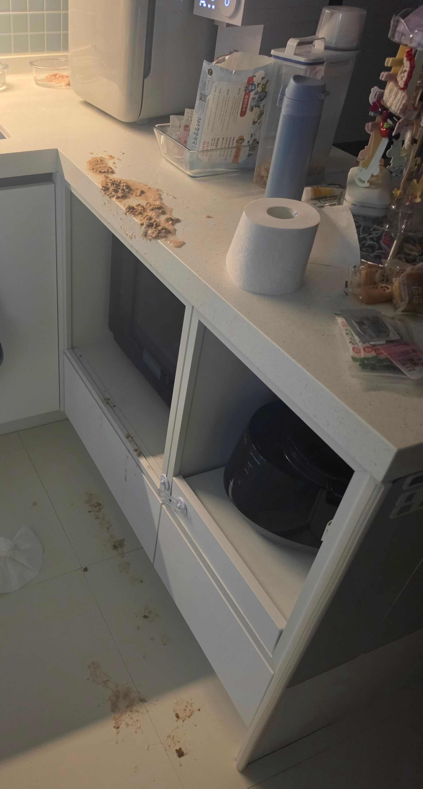

fip(전염성 복막염) 3차 재발 후 약 16주 먹이고 단약했는데
최근 구토가 또 심해졌네
4차 재발해도 약으로 컨트롤 가능하지만 내성 생기는 순간 답이없어서 ㅎㅎ...
며칠뒤에 단약 후 재진가는데 좋은소리는 안나올거같다
이제 10살인데 애들 초등학교 갈때까지만 살라고 그렇게 부탁했는데
한계에 온거같음
동물은 데리고 살면 안되는거같다 마음만 싱숭생숭해진다
좋았던 기억은 추억이고
아팠던 기억은 내 마음에 상처만 생기네
잘 해줘야지하면서 육아땜에 소홀해지니 더 마음아프다

야옹이에게 너희 가족은 최고의 안식처였을 거임
님도 야옹이 덕분에 좋은 추억 가지게 되었잖아
힘내라